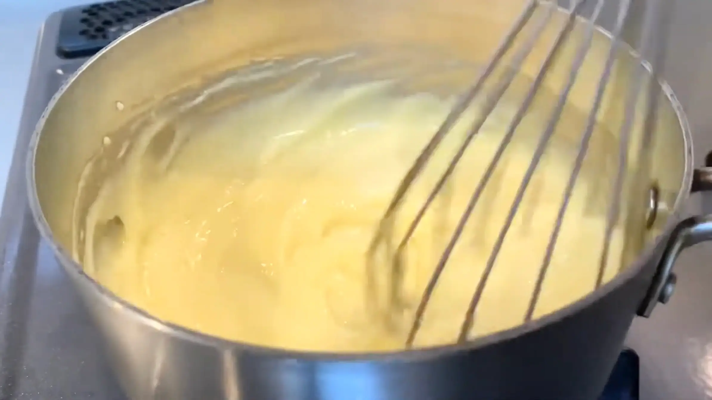
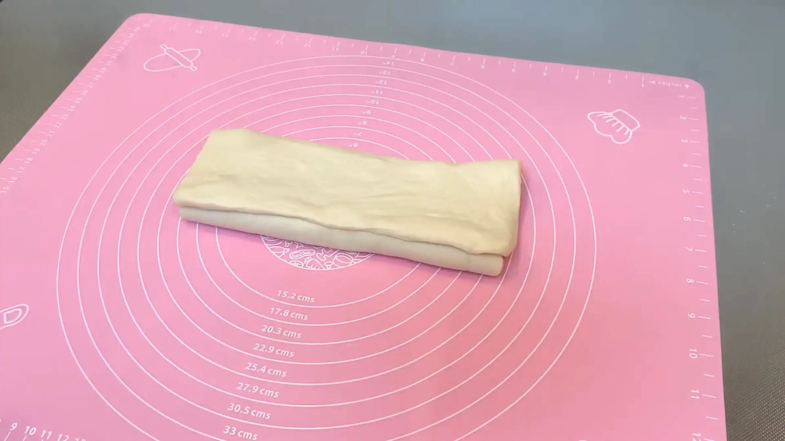
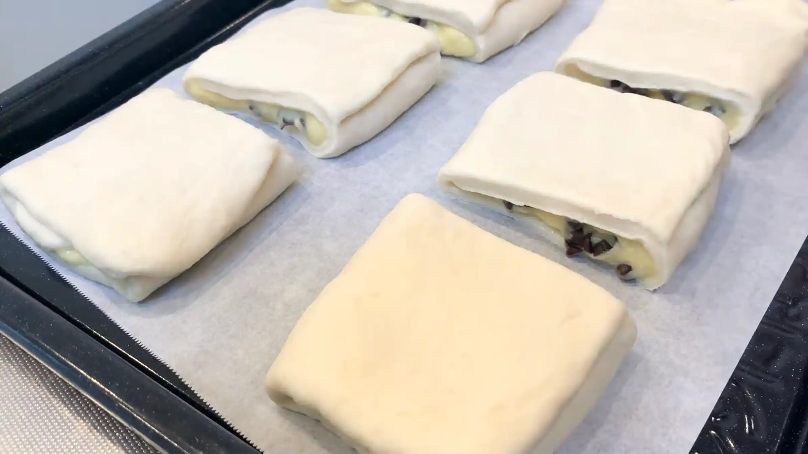

材料 6個分
※粉量を変えると自動計算されます
生地
カスタードクリーム
仕上げ
作り方
カスタードクリーム
STEP 1
全卵、薄力粉、グラニュー糖を混ぜ、牛乳を加える
薄力粉はダマになりやすいので、先にしっかり混ぜ合わせておきます。最後に牛乳を加えることで、なめらかなクリームに仕上げることができます。
薄力粉はダマになりやすいので、先にしっかり混ぜ合わせておきます。最後に牛乳を加えることで、なめらかなクリームに仕上げることができます。
STEP 2
中火にかけ、とろみが出るまで混ぜる
火にかけたらヘラを使い、絶えず混ぜます。（画像はホイッパーですが、ヘラの方が焦げ付きにくいです）沸騰してから30秒〜1分程度しっかり加熱して、粉に火を通します。弱火で長時間加熱すると、卵に先に火が入りダマになりやすいため、少し怖く感じますが、中火で手早く加熱するのがおすすめです。
火にかけたらヘラを使い、絶えず混ぜます。（画像はホイッパーですが、ヘラの方が焦げ付きにくいです）沸騰してから30秒〜1分程度しっかり加熱して、粉に火を通します。弱火で長時間加熱すると、卵に先に火が入りダマになりやすいため、少し怖く感じますが、中火で手早く加熱するのがおすすめです。

STEP 3
お好みでバニラエッセンスを加え、クリームを冷蔵する
カスタードクリームを平らな容器に移してならし、表面にラップをぴったり密着させます。広げることで熱が抜けやすくなり、ラップを密着させることで表面の乾燥も防げます。卵や牛乳を使ったクリームは傷みやすいため、粗熱が取れたら冷蔵庫に入れ、できるだけ早くしっかり冷やします。
カスタードクリームを平らな容器に移してならし、表面にラップをぴったり密着させます。広げることで熱が抜けやすくなり、ラップを密着させることで表面の乾燥も防げます。卵や牛乳を使ったクリームは傷みやすいため、粗熱が取れたら冷蔵庫に入れ、できるだけ早くしっかり冷やします。
生地
STEP 1
ホームベーカリーで生地を作る
ホームベーカリーに材料をセットして「生地コース」を選べば、生地作りから一次発酵までお任せできます。コースが終わったら、次の作業に進みます。
ホームベーカリーに材料をセットして「生地コース」を選べば、生地作りから一次発酵までお任せできます。コースが終わったら、次の作業に進みます。
STEP 2
生地を2等分して丸め、ラップをして常温で15分おく
分割した生地は、表面がなめらかになるように軽く丸めておきます。ここで生地を休ませることで、次の工程で生地を伸ばしやすくなります。
分割した生地は、表面がなめらかになるように軽く丸めておきます。ここで生地を休ませることで、次の工程で生地を伸ばしやすくなります。
STEP 3
生地を縦30cm×横20cmの長方形に伸ばす
まず生地を手で押さえて、厚みを揃えます。そこからめん棒を使って伸ばしていきますが、長方形に伸ばす際は、中央から左上、右上、左下、右下へと、めん棒を外側に向かって動かします。中央から四隅へ均等に伸ばしていくと、自然と四角い形に整っていきます。今回はこの作業を2個分行いますが、2個目は丸めた生地のままおいておき、先に1個目をフィリングを包んで成形するところまで進めていきます。
まず生地を手で押さえて、厚みを揃えます。そこからめん棒を使って伸ばしていきますが、長方形に伸ばす際は、中央から左上、右上、左下、右下へと、めん棒を外側に向かって動かします。中央から四隅へ均等に伸ばしていくと、自然と四角い形に整っていきます。今回はこの作業を2個分行いますが、2個目は丸めた生地のままおいておき、先に1個目をフィリングを包んで成形するところまで進めていきます。
STEP 4
生地の中央にカスタードクリーム、チョコチップを入れる
カスタードはしっかり冷やしてから使うことで、パン生地が温まりすぎるのを防ぎ、成形もしやすくなります。冷蔵したカスタードはそのままだと少し硬さがあるので、使う前にへラで軽くほぐしてから使います。（滑らかにしすぎると成形の際にはみ出しやすいので、生地に広げられる程度で大丈夫です。）
カスタードはしっかり冷やしてから使うことで、パン生地が温まりすぎるのを防ぎ、成形もしやすくなります。冷蔵したカスタードはそのままだと少し硬さがあるので、使う前にへラで軽くほぐしてから使います。（滑らかにしすぎると成形の際にはみ出しやすいので、生地に広げられる程度で大丈夫です。）
STEP 5
三つ折りする
フィリングが飛び出さないよう、優しく折りたたみます。ここまできたら、もう一つの生地も同様STEP3〜STEP5を行います。
フィリングが飛び出さないよう、優しく折りたたみます。ここまできたら、もう一つの生地も同様STEP3〜STEP5を行います。

STEP 6
3等分にカットして天板にのせ、ラップをして20分おく
成形した生地を、ひとまわり大きくなるまで二次発酵させます。発酵時間は室温や生地の温度によって変わるため、時間は目安とし、生地の膨らみ具合を確認してください。
成形した生地を、ひとまわり大きくなるまで二次発酵させます。発酵時間は室温や生地の温度によって変わるため、時間は目安とし、生地の膨らみ具合を確認してください。

STEP 7
卵もしくは牛乳を塗り、アーモンドをトッピングする
厚く塗りすぎると流れたりムラになったりするため、全体に薄く均一に広げます。卵を塗るとツヤっと、牛乳を塗るとマットな質感に焼きあがります。
厚く塗りすぎると流れたりムラになったりするため、全体に薄く均一に広げます。卵を塗るとツヤっと、牛乳を塗るとマットな質感に焼きあがります。
STEP 8
予熱なしのオーブン190℃で10分、さらに200℃で15分で焼く（仕上げにお好みで粉砂糖をかける）
オーブンが徐々に温まることで生地にゆっくり熱が入り、焼き始めに生地が膨らむ時間を確保しやすくなります。また、底面への急激な加熱を抑えられるため、底が焦げやすい家庭用オーブンでも、ふんわりと焼き上がりやすくなります。ただし、オーブンによって仕様は異なりますので、必要に応じて焼き時間や温度を調整してください。
オーブンが徐々に温まることで生地にゆっくり熱が入り、焼き始めに生地が膨らむ時間を確保しやすくなります。また、底面への急激な加熱を抑えられるため、底が焦げやすい家庭用オーブンでも、ふんわりと焼き上がりやすくなります。ただし、オーブンによって仕様は異なりますので、必要に応じて焼き時間や温度を調整してください。
動画でチェック
おいしく作るためのワンポイントコラム
日本でよく見る丸いクリームパンではなく、四角く焼き上がる海外のクリームパン。動画のように上手に焼けるのか、そしてどんな味なのかをさっそく検証しました。
自家製カスタードとチョコチップ、香ばしいアーモンドスライスを巻き込んで作った結果、おうちパン作りがもっと楽しくなる「2つの発見」がありました！
① 卵白入りの生地の特徴
卵白を入れた生地は少し固さがあってベタつきにくいため、20×30cmの四角く伸ばす成形が簡単になりました。焼き上がりも切り口のエッジがくっきりするので、編み込み成形のパンなど模様を美しく見せたい時にはおすすめです。ただ、食感に少し固さがあるため、しっとりふわふわ生地がお好きな方は、好みが分かれるかなという印象です。
② 全卵カスタードクリームの味わい
スタードは卵黄だけで作ることが多いですが、今回は卵白を余らせないよう全卵を丸ごと使用しました。手軽で美味しく仕上がりますが、全卵クリームはあっさり淡白な味わいに。一方、卵黄だけで作ると濃厚なコクと贅沢な甘みが出ます。手軽さなら全卵、リッチなおいしさを追求するなら卵黄だけ、と使い分けるのがおすすめです！（私のお気に入りはやっぱり卵黄だけのカスタードですね！）
海外のレシピを再現すると生地がさっくり固めに焼き上がることが多いですが、今回も素材の文化の違いを感じる面白い仕上がりになりました。材料や工程による出来上がりの違いを知ると、おうちパン作りがますます奥深くて楽しくなりますね！
自家製カスタードとチョコチップ、香ばしいアーモンドスライスを巻き込んで作った結果、おうちパン作りがもっと楽しくなる「2つの発見」がありました！
① 卵白入りの生地の特徴
卵白を入れた生地は少し固さがあってベタつきにくいため、20×30cmの四角く伸ばす成形が簡単になりました。焼き上がりも切り口のエッジがくっきりするので、編み込み成形のパンなど模様を美しく見せたい時にはおすすめです。ただ、食感に少し固さがあるため、しっとりふわふわ生地がお好きな方は、好みが分かれるかなという印象です。
② 全卵カスタードクリームの味わい
スタードは卵黄だけで作ることが多いですが、今回は卵白を余らせないよう全卵を丸ごと使用しました。手軽で美味しく仕上がりますが、全卵クリームはあっさり淡白な味わいに。一方、卵黄だけで作ると濃厚なコクと贅沢な甘みが出ます。手軽さなら全卵、リッチなおいしさを追求するなら卵黄だけ、と使い分けるのがおすすめです！（私のお気に入りはやっぱり卵黄だけのカスタードですね！）
海外のレシピを再現すると生地がさっくり固めに焼き上がることが多いですが、今回も素材の文化の違いを感じる面白い仕上がりになりました。材料や工程による出来上がりの違いを知ると、おうちパン作りがますます奥深くて楽しくなりますね！


今回は海外の動画で見た、おしゃれな『クリームパン』を作ってみました！日本でよく見かける丸いフォルムではなく、四角く焼き上がる成形が魅力のレシピです。動画のように上手に焼けるのか、そしてどんなお味なのかを検証していきます。
コラムでは、「卵白入りの生地の特徴」、そして「全卵カスタードクリームの味わい」という2つの検証結果をご紹介します。